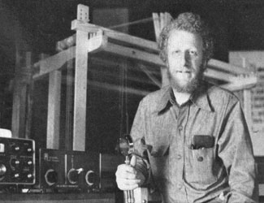
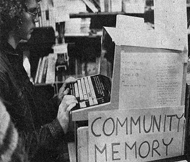
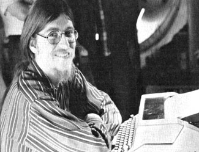
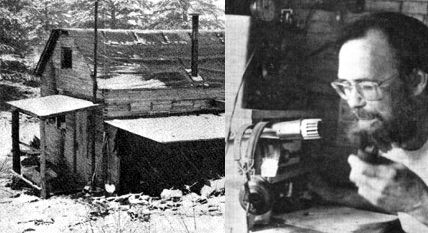

New Directions Radio
New directions radio shares its related number of encounters in communication networks from among alternatives-minded people. One of which is the ham radio and basically the simple transmission of facts that alternatives community contains hundreds of thousands of people who have already done a lot toward searching out new values and seeking new directions for their lives. Thus permitting individuals not only to tell their stories to a distant group, but also to answer questions from that group as well.
By Copthorne Macdonald
May/June 1974
I've just returned from a fascinating trip west with Jim Stamper (WA4HUB), and "experience overload" might come close to describing my present condition. Since a number of our encounters related to New Directions Radio and other communication networks among alternatives-minded people, I'd like to share these happenings with you.
THE FUTURE
An increasing number of people feel that we have entered a period of extremely high risk to the earth's inhabitants. Different individuals put the stress on different portions of the overall problem. Some analysts such as Ivan Illich (Tools for Conviviality) and Roberto Vacca (The Coming Dark Age) envision a disintegration of industrial society within the next 10 or 20 years. As they see it, the "system" is growing too complex, and requires that too many things go "just right" for everything to continue to hang together indefinitely. (In any complex, marginally stable system, a few "minor" problems occurring simultaneously could trigger a domino-effect cascading downfall.) Others-such as the Club of Rome (The Limits to Growth), and Paul Ehrlich (How to be a Survivor) warn of breakdowns a bit further down the road due to resource depletion, population growth and pollution.
As I indicated in MOTHER NO. 25, avoiding a catastrophic breakdown is what I see as the top priority task. Among those with some bold and creative ideas on how this might be accomplished is economist/ecologist/futurist Robert Theobald. The first stop on our trip was Wickenburg, Arizona, where Jim, his friend Bill Hoffman and I spent a couple of days with Theobald discussing his plans and sharing ideas.
As Bob puts it, "The task is to rebuild Grand Central Station while keeping the trains running." He makes the historical observation that those in power have always been too nearsighted to make the changes necessary to prevent their empires from crumbling. The "leaders", ironically, lack the necessary perspective to lead around the crises. He feels that the required changes will come about only if a desire for change is expressed at the grassroots level, by large numbers of individuals.
"Fat chance!", you say? Maybe the picture isn't that bleak. Theobald notes that human beings always operate in their own self-interest . . . as they themselves perceive that self-interest. Unfortunately, most people don't have the foggiest idea of what their long-term self-interest really is. They have "world views" and "mind sets" based upon their own life experiences and internalized information. Such concepts are often limited, distorted and terribly out of date. Because they're held in the guts rather than in the head, however, intellectual challenges to these concepts fail. Arguments, even well reasoned ones, do not convince. They simply induce the other person to defend his position . . . thereby reinforcing it. The approach that can work, Bob says, is to present people with new, credible information. Thus equipped, the individual himself is capable of developing a new world view while the old one atrophies away.
In his book Habit and Habitat Bob asks the key question: "How are we to help people discover for themselves the new conditioned responses that will permit them to act effectively within the new realities?" The detailed approaches are just now starting to evolve, but he feels that they must include three basic steps. "They are, first, the provision of new, credible information. Second, the availability of effective opportunities to discuss the information which has been received, to discover the extent to which it is valid. Third, the opportunity to act on the insights discovered and thereby create feedback patterns which will provide [additional] new credible information."
Among the large-scale projects which Bob Theobald is working on are some bicentennial activities which look forward to the future, not just backward at the past. (What kind of a third century do we want for America?) His "National Values Project" is expected to extend throughout the entire Bicentennial Era until 1991. As the plans develop, I'll pass the information along. Whatever form these projects finally take, though, the idea is to get a large number of Americans to give thought to where their self-interest really lies and to consider what changes in society and its institutions would be required to get us from an unsatisfactory present to a more satisfactory future. (Bob, incidentally, is a prolific writer and I particularly recommend his latest book, Habit and Habitat, if you'd like to get deeper into his thinking. Write for a list of his publications to Box 1531, Wickenburg, Arizona 85358, or check your local library.)
Bob's ideas have several possible tie-ins with New Directions Radio. One is the use of ham radio in the information delivery process: basically the simple transmission of facts, but much more too. The alternatives community contains hundreds of thousands of people who have already done a lot toward searching out new values and seeking new directions for their own lives. It strikes me that one of the most valuable informational outputs to those who are wrestling with such questions is simply the personal experiences of people who have made substantial and purposeful changes in their lifestyles. Ham radio could permit such individuals not only to tell their stories to a distant group, but to answer questions from that group as well.
A second possible use of New Directions would be to enable communication between "values groups" in different parts of the country, providing a cultural cross-fertilization which might help people move beyond their local world views. A third possibility is expansion of the New Directions Roundtable activity. We could start additional on-the-air groups to explore questions of values with our fellow hams and with their friends and neighbors.
BERKELEY AND SAN FRANCISCO
Theobald speaks of "abundance regions" and "scarcity regions" in several of his books, and after a couple of days in the Bay Area Jim Stamper dubbed the Berkeley/San Francisco district an "abundance region for alternatives". For those of us struggling in the "scarcity regions" to get it together with a few friends, such richness really boggles the mind.
Eleven years ago, when Elly and Howard Harawitz moved to Berkeley, the food co-op there already had several hundred members. In the intervening years, over 60,000 people have joined that organization! The Eastbay Community Resource Handbook put out by People's Energy (4911 Telegraph Avenue, Oakland, California 94609) lists more than 300 alternative and change-oriented groups in the Berkeley/San Francisco vicinity.
Just one example: It you walk into Berkeley's Whole Earth Access Company-down the aisle past the wind generator-and turn to the right at the rack containing the back issues of MOTHER, you'll find a computer terminal. It's part of a community access information system put together by a non-profit local group called Resource One (1545 Dwight Way, Berkeley, California 94703). Ephram Lipkin explained the basic idea: putting sophisticated technology (comput ers) directly into the hands of ordinary people so as to "bypass the information gatekeepers" who filter, edit and otherwise control the flow of knowledge. He feels that these techniques could lead to "decentralized, humanized politics".
The present Community Memory works like an electronic filing cabinet. Anyone can go to one of the public terminals and type in an informational "message": anything from your latest poem, to a statement that you're a good guitarist looking for a rock group that needs one, to an offer to take riders on your upcoming trip to Denver. Your info goes by phone line to the computer in San Francisco where it's tucked away in the device's storage along with whatever indexing "keywords" you feel a person searching for your type of notice might use.
To retrieve information you simply type in a keyword. I experimented with RADIO, got a readout that consisted of the first line of each of nine stored items . . . and requested a complete printout of the three that looked most interest ing. Then I finished up by entering my own item (No. 10) and indexing it under the keywords RADIO, AMATEUR, HAM and NEW DIRECTIONS. While I was there, incidentally, a woman tried the words SILK THREAD. No source of thread appeared, but her consolation prize was finding out about a guy who is going to the Orient shortly to buy silk.
The system functions and-if enough terminals can be placed in the right spots-it promises to become a very effective community tool. The computer, as I see it, comes into its own when there is a high volume of information. (In many places, like the town I live in, which doesn't even have a food coop, a 2' X 3' bulletin board would be more than adequate! I rapped with Resource One about possible system tie-ins with ham radio teletype and concluded that such arrangements were technically feasible, but that people living out of the area wouldn't have a whole lot of use for the current Berkeley community information. Somehow, though, I'd like to see that wealth of experience with alternative activ ities become available to people in other parts of the country.
I also met Bob Wallace who's working with the OPEN information network in Seattle and designing a minicomputer system to help meet community needs in that area. (Bob can be reached at 4740 University Way N.E., Seattle, Washington 98105.)
The best thing of all in Berkeley, though, was finally getting to see Howard and Elly, Carter Rose (WA6DGV) and George Thompson (W6FY). No communication medium can approach really being together . . . but then again, if it hadn't been for the radio putting us in touch in the first place, we'd never have found one another at all.
GEORGE AND BETTY ON KELLY HILL
The first ham I met after getting my license in 1951 was George Cummings. We were both living in northern Illinois at the time, but soon parted ways. While I was doing my go-to-college and climbthe-corporate-ladder things in the 50's and early 60's, George and Betty had opted for the mountains of Colorado. Homesteading was the dream, but with the economic pressures on their growing family it always seemed a bit beyond reach . . . and George worked in the mines, repaired TV's, toted mail and did a variety of other things to put food on the table.
Last fall it happened for the Cummingses: the final break with job and all, heading off to their land in northeastern Washington just south of the British Columbia border and building a house on their hilltop during the rainiest autumn in many years. (Some day, I hope, they'll put the whole story into a book. Betty has already written an article describing the way they built their $200 house out of mill end 2 X 4's and 2 X 6's.)
Since I had to get from California to Minnesota by some route, I thought, "Why not make a surprise visit to George and Betty on Kelly Hill?" I'll spare you the details of getting topo maps in Spokane, discovering that Kelly Hill covers a good 15-square-mile area, finding the Cummingses' rural route box and hiking in the three miles from the county road. (I kept following kids' footprints, feeling like a wilderness hunter stalking game.) I finally reached the family's handcrafted house, and (as I had hoped) seeing me in the doorway freaked them out. I spent a beautiful three days with them, trying my inept hand at cutting wood, grinding wheat, turning over sod, hauling water and other homesteading chores. The wound-down pace-coupled with physical exercise that really accomplished something-sure felt good.
As you might expect, radio is a tool the Cummings family have integrated smoothly into their new life. The only power source at present is a 12-volt battery charged periodically by a small gasoline engine, so George's transmitter power is limited. His station, WØQPO/7, uses a 5-watt Argonaut which is too weak-at least when using voice-to get through the background interference levels usually present on evenings and weekends. (it is adequate, though, for his midday 75-meter voice schedules twice a week with Norris Hyde [VE7AIC]. Norris is a most interesting chap who has been homesteading for 20 years near Sicamous, B.C., 'about 160 miles north of George. He and I had exchanged letters, but hadn't gotten together on the air until I participated in one of the regular sessions while at George's and Betty's.)
On the basis of his own experience, George advocates CW (code) operation for stations using low power. While the rate of information transfer is slower than that for voice, CW sending can be copied at much weaker levels and is more easily separated from interfering signals. In addition, CW-only equipment is less complex and therefore less expensive to buy or build.
My stay with the Cummingses also made me more fully aware of the possibilities of citizens' band radio. CB is a real mess in metropolitan-areas because there are way too many stations for the number of channels. In rural districts, however-because of CB's limited range-this is not the case. Up where George and Betty live, CB, is used like the old-fashioned party line telephone. The school bus drivers have units in their vehicles and report to parents when their children are picked up. Neighbors are able to talk with neighbors, and there's a fast communication link to others in time of emergency.
The kids can even take walkie-talkies with them while walking to the bus, or adventuring in the nearby hills and valleys. (CB is a whole story in itself, and the details will have to wait until another time.)
George's plans include putting up some long-wire ham antennas made from 18-gauge copperweld electric fence wire. These devices will boost his signal "for free" in certain directions, while reducing the interference coming in from other quarters. He's also planning to put together some wind generator models, since he's eager to come up with a battery-charging scheme that doesn't need gasoline. In the meantime it's going to be a busy spring and summer, getting the first crop out of that virgin soil.
A SLOW-SPEED CW NET
A number of people with Novice licenses have written suggesting a New Directions CW net. George Conley (WNØKYC), 518 West Third Street, Hastings, Nebraska 68901, proposed-among other points-that we pick a specific early morning time, and a specific 40-meter frequency as a meeting place, with no real structure for the net activity itself. As he put it, "the idea will be to call 'CQ NEWS' and see if there's any reply, or break into someone else's contact in progress . . . sort of a street corner on 40 meters!"
I suggest that the CW net use 7133 kHz, which was publicized as an NDR calling frequency in MOTHER NO. 24. This avoids the foreign broadcasts which can be troublesome early in the morning in some parts of the country. Since coverage will tend to be regional, how about starting at 6:30 a.m. Daylight time in each time zone? (Obviously, 6:30 a.m. EDT is also 5:30 a.m. CDT . . . so that stations in the Midwest could listen for East Coast stations an hour ahead of their local session. Similarly, East Coast late risers who don't need to head off for the 8-to-5 could listen for Midwest stations at 7:30 a.m. EDT.) When, the days get shorter in the fall, and the skip on 40 meters gets too long, the activity could move to 3733 in the 80-meter Novice band.
To summarize:
SLOW-SPEED CW NET
Date: Daily
Time: 6:30 a.m. Local Daylight Saving Time
Frequency: 7133 kHz (with 3733 as alternate)
Call: "CQ News"
George Conley suggests that we try something like this as a start, and modify as necessary. Sounds good to me.
OTHER ITEMS
Robert Drifka (WB6QVZ), 5208 Lexington Avenue, Los Angeles, California 90029, would like to hear from other hams in the L.A. area interested in getting something going on 2-meter FM.
Thanks to Dawn Zinn for pointing out an error I made in quoting license fees in MOTHER NO. 24. A recent fee boost by the FCC also gets into the act: New or renewed amateur licenses are now $10.00 and a change of address modification is currently $5. 00.
Peace,
Cop Macdonald (WOORX)
P.O. Box 483
Rochester, Minn. 55901
 Howard Harawitz (WA6YAG), a man of many talents, in his Berkely home. That's his ham rig and rug weaving loom with Howard. |
 Anybody who wants to know anything just might find the answer at the Community Memory computer terminal in Berkeley. |
 Anybody who wants to know anything just might find the answer at the Community Memory computer terminal in Berkeley. |
 Technology can serve gentle people! Glen Spain waits for readout on the Vocations for Social Change computer terminal. |
 Snug in his $200 house, homesteader George Cummings (W?QPO/7) chats with Norris Hyde (VE7AIC), who lives 160 miles away. |
 |